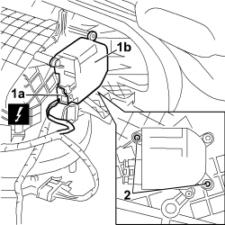

5040D75 AIR CONDITIONING RECIRCULATION FLAP CONTROL MOTOR - R.R
- Path
- Procedures > 50 AUXILIARY UNITS > 5040 AIR CONDITIONING CASING AND COMPONENTS > 5040D AIR CONDITIONING CONTROLS > 5040D75 AIR CONDITIONING RECIRCULATION FLAP CONTROL MOTOR - R.R
- Kind
- repair procedure (removal / refitting; the operation number is the code)
- Applies to
- all engines; all production periods
- Interactive page
- https://sloeber94.github.io/elrnDB-fCrm/en/#/194000631
Applies to: all engines; all production periods
 Removing
Removing
 Refitting
Refitting- Turn the ignition key to the OFF position and extract it.
- Disconnect the negative and positive battery terminals and insulate them.
- Wait for 10 minutes before continuing.
Description | Connector | |
|---|---|---|
BATTERY |
- Working from inside the vehicle, carry out the following operations:
Op. 7040A45 RIGHT DASHBOARD SIDE TRIM - R.R.
Op. 5570T85 CD/AUDIO PLAYER LOADER - R R
Op. 7040A31 DASHBOARD COMPARTMENT ASSEMBLY - R.R.
1. Release the electrical connection (1a) for the recirculation flap control motor (1b) and disconnect it.
2. Undo the two fixing bolts and remove the motor from the air conditioning casing.
Description | Connector | |
|---|---|---|
1a | OUTSIDE AIR/RECIRCULATION INTAKE FLAP ACTUATOR |

Applies to: all engines; all production periods
Refitting
Removing- Check that the control motor for the air conditioning recirculation flap is not damaged.
- Place the air recirculation flap control motor in position.
- Tighten the two bolts fixing the recirculation flap control motor to the air conditioning casing and secure it.
- Connect the electrical connection to the recirculation flap control motor.
Description | Connector | |
|---|---|---|
OUTSIDE AIR/RECIRCULATION INTAKE FLAP ACTUATOR |
Op. 7040A31 DASHBOARD COMPARTMENT ASSEMBLY - R.R.
Op. 5570T85 CD/AUDIO PLAYER LOADER - R R
Op. 7040A45 RIGHT DASHBOARD SIDE TRIM - R.R.
- Connect the negative and positive battery terminals.
Description | Connector | |
|---|---|---|
BATTERY |
- Carry out tests to check that the air conditioning is working properly.
Topics linked from this page (6)
- 5570T85 CD/AUDIO PLAYER LOADER - R R
- 5580C AIR BAG SYSTEM
- 7040A31 DASHBOARD COMPARTMENT ASSEMBLY - R.R.
- 7040A45 RIGHT DASHBOARD SIDE TRIM - R.R.
- A001 BATTERY
- N082 OUTSIDE AIR/RECIRCULATION INTAKE FLAP ACTUATOR